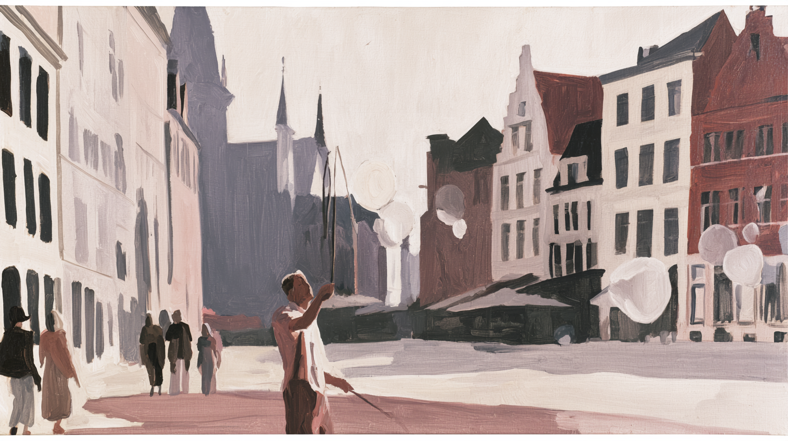
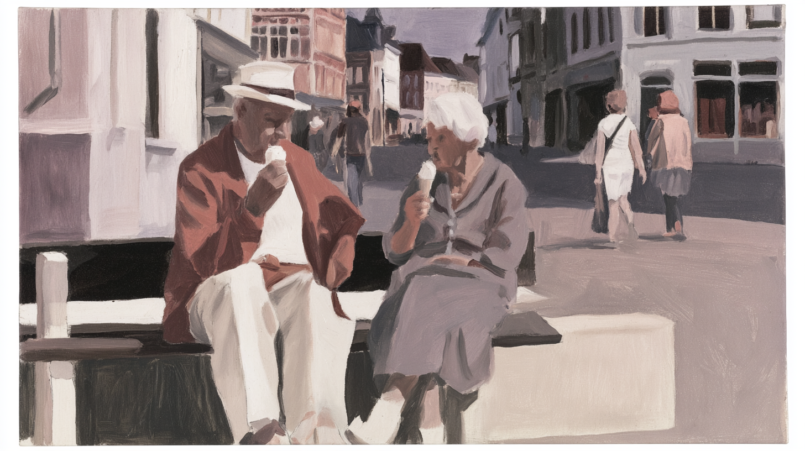
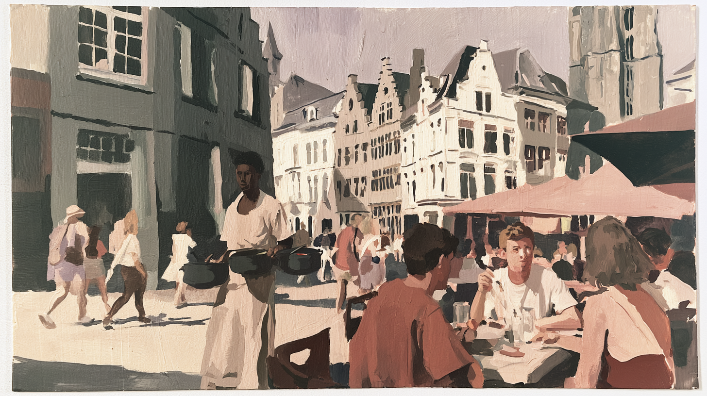
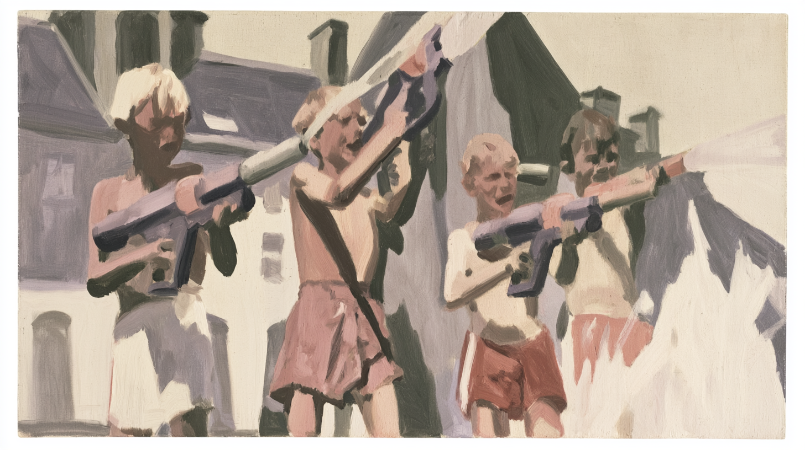
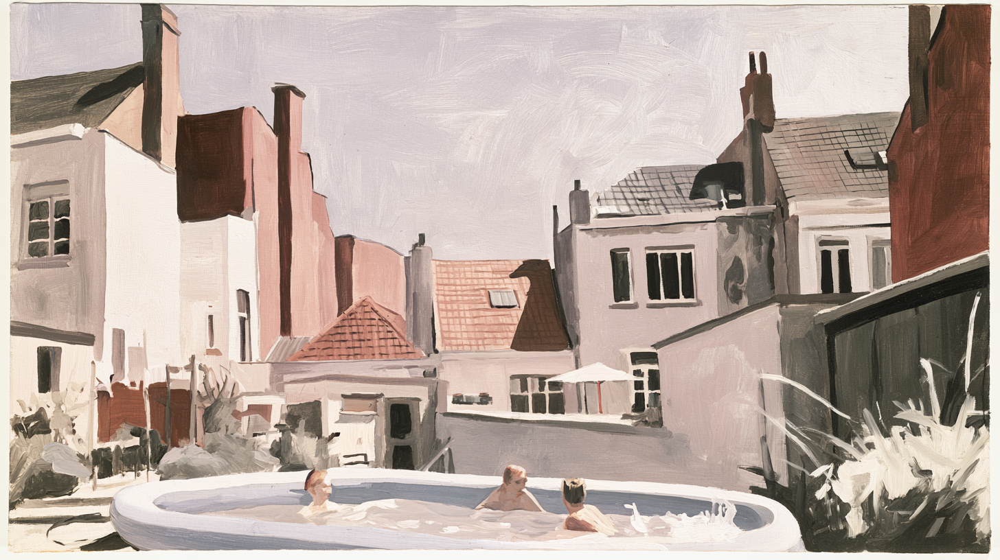

July 2026
Midjourney 8.2 Is Back in Our Workflow
After more than six months on the sidelines, we tested the new model with six painted summer scenes from Ghent.
Midjourney 8.2 is a major step forward.
After more than six months of barely using Midjourney, we are adding it back to our creative workflow. Previous versions were fast and visually impressive, but other models had become a better fit for our production needs. With version 8.2, that balance has changed again.
What changed in Midjourney 8.2?
The official update focuses on aesthetics, image quality and personalisation. Midjourney also states that random low-quality generations should occur much less often and that personalisation profiles should understand individual taste more accurately.
For a creative workflow, those improvements are more important than simply producing a sharper image. Fewer failed generations mean less rerolling. Better personalisation means a visual direction can be reached faster. More consistent aesthetics make it easier to build a coherent series instead of selecting one isolated result.
Testing the model with Ghent
We tested version 8.2 by creating six oil-painting-style scenes of a hot summer day in Ghent. The set includes canal boats, a street performer making soap bubbles, people eating ice cream, a busy terrace, children having a water fight and an improvised rooftop pool.
The objective was to see whether the model could maintain one visual language across different locations, compositions and groups of people.
The results were noticeably more consistent than what we experienced with previous Midjourney models. The colour palette, visible paint texture, level of detail and treatment of architecture remain coherent across the complete set. The compositions also required fewer generations before producing something usable.
From image generation to production
The selected images were then animated with Seedance 2. This is an important part of the test: generated images rarely remain final images in our workflow. They become source material for motion, design and further post-production.
Our current process looks like this:
• Define the visual direction and subject.
• Generate and explore compositions in Midjourney 8.2.
• Curate the strongest results and refine the series.
• Animate selected frames with Seedance 2.
• Finish the output through editing and post-production.
Why Midjourney is back
Midjourney 8.2 is not returning to our workflow simply because it makes more attractive images. It is returning because the output is more consistent, more aligned with a defined visual direction and more useful in the next stages of production.
After more than six months of leaving the model aside, version 8.2 gives us a good reason to use it again.




